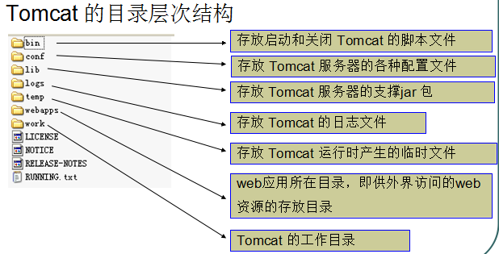

基本概念
WEB 开发的相关知识
WEB，在英语中 web 即表示网页的意思，它用于表示 Internet 主机上供外界访问的资源。Internet 上供外界访问的 Web 资源分为：
- 静态 web 资源（如 html 页面）：指 web 页面中供人们浏览的数据始终是不变。
- 动态 web 资源：指 web 页面中供人们浏览的数据是由程序产生的，不同时间点访问 web页面看到的内容各不相同。
静态 web 资源开发技术：Html
常用动态 web 资源开发技术：JSP/Servlet、ASP、PHP 等
在 Java 中，动态web资源开发技术统称为 Javaweb。
WEB 应用程序
WEB 应用程序指供浏览器访问的程序，通常也简称为 web 应用。例如有 a.html 、b.html …..多个 web 资源，这多个 web 资源用于对外提供服务，此时应把这多个 web 资源放在一个目录中，以组成一个 web 应用（或 web 应用程序）
一个 web 应用由多个静态web资源和动态 web 资源组成，如: html、css、js 文件，Jsp 文件、java 程序、支持 jar 包、配置文件等等。
Web 应用开发好后，若想供外界访问，需要把 web 应用所在目录交给 web 服务器管理，这个过程称之为虚似目录的映射
WEB 发展史
WEB 发展的两个阶段：静态、动态
静态 WEB
htm、html，这些是网页的后缀，如果现在在一个服务器上直接读取这些内容，那么意味着是把这些网页的内容通过网络服务器展现给用户。整个静态WEB操作的过程图如下：

在静态 WEB 程序中，客户端使用 WEB 浏览器（IE、FireFox 等）经过网络（Network）连接到服务器上，使用 HTTP 协议发起一个请求（Request），告诉服务器我现在需要得到哪个页面，所有的请求交给 WEB 服务器，之后 WEB 服务器根据用户的需要，从文件系统（存放了所有静态页面的磁盘）取出内容。之后通过 WEB 服务器返回给客户端，客户端接收到内容之后经过浏览器渲染解析，得到显示的效果。静态 WEB 中存在以下几个缺点：
- Web 页面中的内容无法动态更新，所有的用户每时每刻看见的内容和最终效果都是一样的。
为了可以让静态的 WEB 的显示更加好看，可以加入了 JavaScript 以完成一些页面上的显示特效，但是这些特效都是在客户端上借助于浏览器展现给用户的，所以在服务器上本身并没有任何的变化。实现静态WEB 客户端动态效果的手段：
- JavaScript
- VBScript
在实际的开发中 JavaScript 使用得最多。
- 静态 WEB 无法连接数据库，无法实现和用户的交互。
使用数据库保存数据是现在大多数系统的选择，因为数据库中可以方便地管理数据，增删改查操作可以使用标准的 SQL 语句完成。
动态 WEB
所谓的动态不是指页面会动，主要的特性的是：“ WEB 的页面展示效果因时因人而变”，而且动态 WEB 具有交互性，WEB 的页面的内容可以动态更新。整个动态 WEB 操作的过程图如下：

动态 WEB 中，程序依然使用客户端和服务端，客户端依然使用浏览器（IE、FireFox 等），通过网络（Network）连接到服务器上，使用 HTTP 协议发起请求（Request），现在的所有请求都先经过一个WEB Server Plugin（服务器插件）来处理，此插件用于区分是请求的是静态资源（*.htm 或者是* .htm）还是动态资源。
如果 WEB Server Plugin 发现客户端请求的是静态资源（*.htm或者是*.htm），则将请求直接转交给 WEB 服务器，之后 WEB 服务器从文件系统中取出内容，发送回客户端浏览器进行解析执行。
如果 WEB Server Plugin 发现客户端请求的是动态资源（*.jsp、*.asp/.aspx、.php），则先将请求转交给WEB Container（WEB容器），在 WEB Container 中连接数据库，从数据库中取出数据等一系列操作后动态拼凑页面的展示内容，拼凑页面的展示内容后，把所有的展示内容交给 WEB 服务器，之后通过 WEB 服务器将内容发送回客户端浏览器进行解析执行。
动态 WEB 应用的实现手段
动态 WEB 现在的实现手段非常多，较为常见的有以下几种：
- Microsoft ASP、ASP.NET
- PHP
- JAVA Servlet/JSP
Microsoft ASP、ASP.NET
微软公司动态 WEB 开发是比较早的，而且最早在国内最流行的是 ASP 。ASP 就是在 HTML 语言之中增加了 VB 脚本，但是标准的开发应用应该是使用 ASP+COM ，但是实际情况来看，在开发 ASP 的时候基本上都在一个页面中写上成百上千的代码，页面代码极其混乱。
ASP 本身有开发平台的限制：Windows+IIS+SQL Server/Access，ASP 只能运行在 Windows 操作系统上，ASP 现在基本上已经淘汰，现在基本上都是使用 ASP.NET 进行开发，ASP.NET 在性能有了很大的改善，而且开发迅速，但是依然受限于平台。ASP.NET 中主要是使用 C# 语言。
PHP
PHP 开发速度很快，功能强大，跨平台（平台指的就是运行的操作系统），而且代码也简单。
Servlet/JSP
这是SUN公司（SUN现在已经被Oracle公司收购）主推的 B/S 架构的实现语言，是基于 JAVA 语言发展起来的，因为 JAVA 语言足够简单，而且很干净。
Servlet/JSP 技术的性能也是非常高的，不受平台的限制，各个平台基本上都可以使用。而且在运行中是使用多线程的处理方式，所以性能非常高。
SUN 公司最早推出的 WEB 技术推出的是 Servlet 程序，Servlet 程序本身使用的时候有一些问题，所有的程序是采用 JAVA 代码+ HTML 的方式编写的，即，要使用 JAVA 输出语句，一行一行地输出所有的HTML 代码，之后，SUN 公司受到了 ASP 的启发，发展出了 JSP（Java Server Page），JSP 某些代码的编写效果与 ASP 是非常相似的。这样可以很方便地使一些 ASP 程序员转向 JSP 的学习，加大市场的竞争力度。
WEB 服务器
WEB 服务器简介
Web 服务器是指驻留于因特网上某种类型计算机的程序，是可以向发出请求的浏览器提供文档的程序。当 Web 浏览器（客户端）连到服务器上并请求文件时，服务器将处理该请求并将文件反馈到该浏览器上，附带的信息会告诉浏览器如何查看该文件（即文件类型）。
服务器是一种被动程序：只有当 Internet 上运行在其他计算机中的浏览器发出请求时，服务器才会响应。
常见的 Web 服务器介绍
WebLogic
WebLogic 是美国 bea 公司出品的一个 application server 。BEA WebLogic 是用于开发、集成、部署和管理大型分布式 Web 应用、网络应用和数据库应用的 Java 应用服务器。将 Java 的动态功能和 Java Enterprise 标准的安全性引入大型网络应用的开发、集成、部署和管理之中。是目前应用最广泛的 Web 服务器，支持 J2EE 规范，而且不断的完善以适应新的开发要求，启动界面如图：
WebSphere
WebSphere Application Server 是一种功能完善、开放的 Web 应用程序服务器，是 IBM 公司电子商务计划的核心部分，它是基于 Java 的应用环境，用于建立、部署和管理 Internet 和 Intranet Web 应用程序。这一整套产品进行了扩展，以适应 Web 应用程序服务器的需要，范围从简单到高级直到企业级。启动界面如图：
Tomcat
TomcatTomcat 是一个实现了 JAVA EE 标准的最小的WEB服务器，是 Apache 软件基金会的 Jakarta 项目中的一个核心项目，由 Apache、Sun 和其他一些公司及个人共同开发而成。因为 Tomcat 技术先进、性能稳定，而且开源免费，因而深受 Java 爱好者的喜爱并得到了部分软件开发商的认可，成为目前比较流行的 Web 应用服务器。学习 JavaWeb 开发一般都使用 Tomcat 服务器，该服务器支持全部 JSP 以及Servlet 规范，启动界面如图：
IIS
Microsoft 的 Web 服务器产品为 Internet Information Services （IIS），IIS 是允许在公共 Intranet 或Internet 上发布信息的Web服务器。IIS 是目前最流行的Web服务器产品之一，很多著名的网站都是建立在 IIS 的平台上。IIS 提供了一个图形界面的管理工具，称为 Internet 信息服务管理器，可用于监视配置和控制 Internet 服务。
IIS 是一种 Web 服务组件，其中包括 Web 服务器、FTP 服务器、NNTP 服务器和 SMTP 服务器，分别用于网页浏览、文件传输、新闻服务和邮件发送等方面，它使得在网络（包括互联网和局域网）上发布信息成了一件很容易的事。它提供 ISAPI（Intranet Server API）作为扩展Web服务器功能的编程接口；同时，它还提供一个 Internet 数据库连接器，可以实现对数据库的查询和更新。
学习 web 开发，需要先安装一台 web 服务器，然后再在 web 服务器中开发相应的 web 资源，供用户使用浏览器访问。
搭建 JavaWeb 应用开发环境 —— Tomcat 服务器
疑问：学习 web 开发，为什么必须要先装一个 WEB 服务器？
在本地计算机上随便创建一个 web页面，用户是无法访问到的，但是如果启动 tomcat 服务器，把 web页面放在 tomcat 服务器中，用户就可以访问了。这说明什么问题?
不管什么 web 资源，想被远程计算机访问，都必须有一个与之对应的网络通信程序，当用户来访问时，这个网络通信程序读取 web 资源数据，并把数据发送给来访者。
WEB 服务器就是这样一个程序，它用于完成底层网络通迅。使用这些服务器，We 应用的开发者只需要关注 web 资源怎么编写，而不需要关心资源如何发送到客户端手中，从而极大的减轻了开发者的开发工作量。
下载和安装 Tomcat 服务器
Tomcat 官方站点：http://jakarta.apache.org
下载 Tomcat 安装程序包：http://tomcat.apache.org/
点击【Download】跳转到如下图所示的下载页面
- tar.gz 文件是 Linux 操作系统下的安装版本
- exe 文件是 Windows 系统下的安装版本
- zip 文件是 Windows 系统下的压缩版本
下载完成后得到的是一个压缩包，将压缩包解压就可以完成 Tomcat 服务器的安装，将压缩包解压后，得到的就是如下图所示的文件夹，这样就完成了 Tomcat 服务器的安装。
启动和测试 Tomcat 服务器

启动 Tomcat 服务器：双击 bin 目录下的 startup.bat 文件启动 Tomcat 服务器
测试 Tomcat 服务器：打开浏览器，输入 http://localhost:8080 ，能显示如下界面代表安装成功
Tomcat 启动常见问题：导致 Tomcat 服务器无法正常启动的原因一般来说就是如下的两个
- JAVA_HOME 环境变量设置问题
要想双击 bin 目录下的 startup.bat 文件启动 Tomcat 服务器，首先要做的就是 在windows 中设置 JAVA_HOME 环境变量，因为 Tomcat 服务器的启动需要用到这个 JAVA_HOME 环境变量，如果 windows 中不存在 JAVA_HOME 环境变量，则 Tomcat 服务器是无法启动的。
在 Window 中配置 JAVA_HOME 变量，操作步骤( win10 系统)：计算机→右键“属性”→高级系统设置→高级→环境变量。点击系统变量下面的“【新建】”，弹出一个新建系统变量对话框，首先在变量名写上 JAVA_HOME ，顾名思义， JAVA_HOME 的含义就是 JDK 的安装路径，，然后在变量值写 JDK 的安装路径，如这里设置的变量值是” D:\Program Files (x86)\Java\jdk1.8.0 “，设置好变量值之后，点击【确定】按钮， JAVA_HOME 环境变量就设置完成，如下图所示：系统变量中多了一个” JAVA_HOME “变量。正常来说，学习 Java 开发的第一步就是配置 Path 环境变量，比较好的配置方式是先配置 JAVA_HOME 环境变量，然后在 Path 变量中使用” %JAVA_HOME% “引用 JAVA_HOME 变量的值。所以这个 JAVA_HOME 环境变量在 Window 中一般都是已经配置好了的，如果忘记配置 JAVA_HOME 环境变量，那么可以使用上述的方式配置。
- 端口占用问题
因为Tomcat服务器启动时是需要默认是使用8080端口的，如果这个8080端口被别的应用程序占用了，那么Tomcat服务器就无法正常启动，看到的现象就是”Tomcat服务器启动界面会打印出异常错误信息，然后就自动关闭了”，如下图所示：
由于这个窗口从启动到关闭的时间非常短，我们很难通过这个窗口看到 Tomcat 启动时的报错异常信息，因此我们一般只能通过 Tomcat 服务器的记录的 log (日志)信息去查看 Tomcat 服务器的运行情况。在 Tomcat 服务器的根目录下有一个logs文件夹， logs 文件夹存放 Tomcat 的日志文件，打开 logs 文件夹，可以看到里面的 log 文件，其中有一个以” catalina.yyyy-MM-dd.log “形式命名的 log 文件，例如” catalina.2019-05-17.log “日志文件就是记录 Tomcat 服务器 2019-05-17 这一天的运行情况。打开 catalina.2019-05-17.log 文件，看看里面的日志记录信息。日志信息里面清楚的记录了 Tomcat 服务器的运行情况，如果因为 8080 端口被占用而无法正常启动，就会记录如上图所示的异常信息，通过查看异常信息，我们就可知道 Tomcat 服务器为什么不能够正常启动了！
总结：当 Tomcat 服务器无法正常启动时，首先检查是否配置了 JAVA_HOME 环境变量，然后再检查 Tomcat 服务器启动时的端口是否被别的应用程序占用了。
If you like this blog or find it useful for you, you are welcome to comment on it. You are also welcome to share this blog, so that more people can participate in it. If the images used in the blog infringe your copyright, please contact the author to delete them. Thank you !